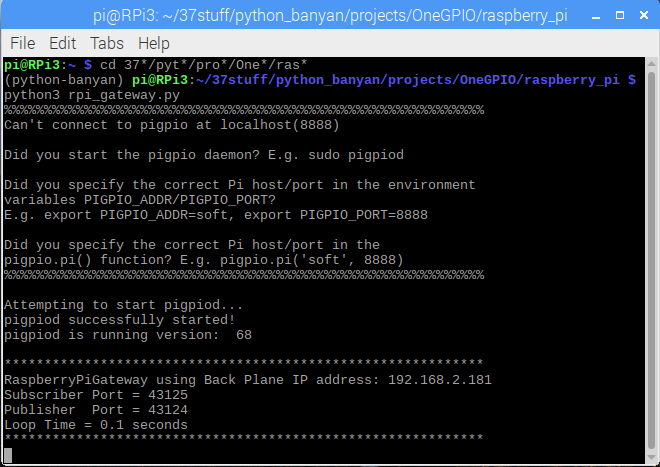
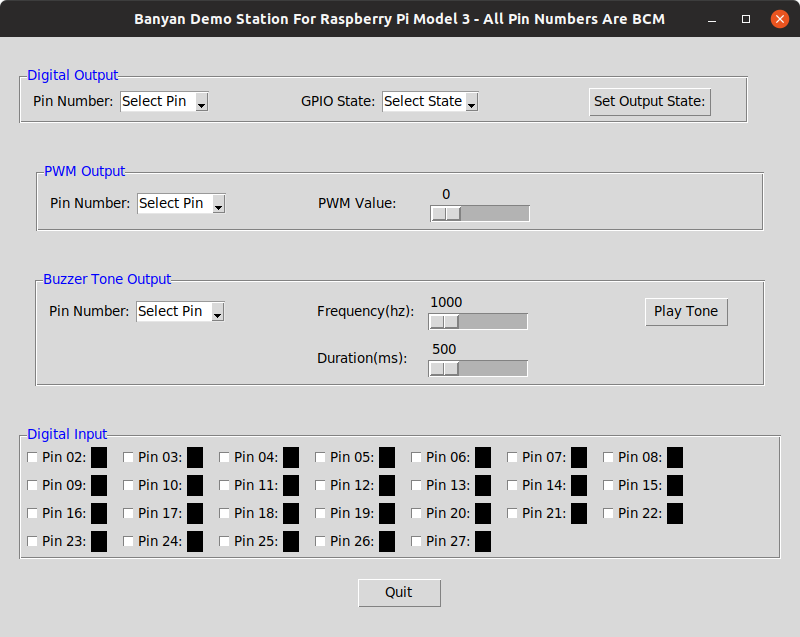

Introduction To The Demos
In this section, we will introduce three demonstration programs that control the Arduino, ESP8266, and Raspberry Pi hardware targets, using common OneGPIO Application Components.
The demo programs included are:
- An LED blink program.
- A tkinter GPIO Demonstration Station.
- A Web-based GPIO Demonstration Station.
A single OneGPIO Application Component is provided for the blink demo, and one for the tkinter demo, each containing the GPIO control logic to run their respective demos.
For the Web Demonstration stations, the logic is coded in JavaScript within the Web page. The Web page connects to the Banyan network through the WebSocket Gateway. OneGPIO formatted messages are JSON encoded on the Webpage and then sent to the WebSocket Gateway.
Prerequisites
All Hardware Platforms
Make sure that you have the newest version of python-banyan on your computer. You can upgrade to the latest version using the pip --upgrade option.
To run the demos, in addition to installing Python Banyan, you will need to download the latest python-banyan distribution files to your computer. To download, go to the Python Banyan Github Web page and click on the green download button and unzip to any directory.
All of the demos may be launched manually, that is, bringing up each component individually. However, it is much simpler to use the Banyan Launcher, and therefore we will use it to launch each demo. To review the information about the launcher, click on this link.
The Banyan launcher is automatically installed as an executable when you install the python-banyan distribution.
The launcher requires a command-line option to load a Launcher specification file. Launcher specification files have been provided for each demo and for each platform. Modifications that you may need to be made to these files will be covered in each demo section.
Python 3.7
Both the Arduino Gateway and WebSocket Gateway requires the use of Python 3.7 or higher.
You may install and manage multiple versions of Python by using pyenv.
With pyenv, you can set a specific directory to use the latest version of Python by using the pyenv local command. You may also create a virtual environment for a given directory using pyenv virtualenv.
Again, this will all be accomplished via the Banyan launcher and will be covered in the Web Demonstration Station section of this document for the Raspberry Pi.
For Windows users, since the Windows Operating System is not dependent upon Python, it is probably easiest to install the latest version of Python3 on your computer from python.org(https://www.python.org/).
Arduino
The Arduino Gateway was implemented using the python-express GPIO library. Install python-express on your computer and firmata-express on your Arduino.
ESP-8266
A NodeMCU ESP-8266 development module was used to test the demo programs. A custom MicroPython script was developed to work with the ESP-8266 Gateway. This script must be installed on the ESP-8266 and may be found here.
This script is a "minified" version to allow it to fit on the device. A fully commented file is provided here.
It is assumed that you already know how to flash a program onto the ESP-8266. If you need some information on flashing the ESP-8266, the program I use to manage ESP-8266 image files is Adafruit Ampy. The Ampy Web page says that only CircuitPython is supported. But you can ignore that warning and use it to install the OneGPIO MicroPython script.
The ampy command-line I use is: ampy -p /dev/ttyUSB0 put esp_8266.py
You will need to re-power the board after flashing. The red LED should flash and then stay lit. It will extinguish when the board successfully connects to the ESP8266 OneGPIO Gateway.
NOTE: You will need to know the TCP/IP address of your ESP-8266 and present that as a command-line argument to the ESP-8266 Gateway.
Raspberry Pi
The Raspberry Pi has no additional requirements unless you wish to install Python 3.7. The demos were tested with "Raspbian Stretch with desktop and recommended software," with a release date of 2019-04-08.
If you are running the demos within a pyenv Python 3.7 or higher virtual environment, the Raspberry Pi Gateway may not be able to import pigpio. To test this out, when in the virtual environment, start-up Python and type import pigpio.
pi@RPi3:~ $ cd 37*
(python-banyan) pi@RPi3:~/37stuff $ python
Python 3.7.3 (default, Apr 26 2019, 09:58:44)
[GCC 6.3.0 20170516] on linux
Type "help", "copyright", "credits" or "license" for more information.
>>> import pigpio
>>>
If no errors are reported, you are good to go. If you see an import error, then you will need to move a copy of pigpio.py to the virtual environment manually.
If you are using the version of pigpio included with the Raspbian distribution, you can find pipgio.py in the /usr/lib/python3/dist-packages/ directory.
If you rebuilt pigpio to use the latest version, then you can find the pigpio.py file in the PIGPIO directory that was created during the build process.
The pigpio.py file needs to be copied to a directory in the ~/.pyenv directory. For my pyenv virtual environment, I used Python 3.7.3 and named the virtual environment python_banyan. I needed to copy the file to:
~/.pyenv/versions/3.7.3/python-banyan/lib/python3.7/site-packages/
Here is the general template for this path:
~/.pyenv/versions/PYTHON VERSION/VIRTUAL ENVIRONMENT NAME/lib/PYTHON VERSION WITHOUT LAST NUMBER/site-packages/
The Demo Examples
All of the demos are launched using the Banyan Launcher. The launcher specification files utilize a relative path to access the components for the applications. As a result, you must maintain the directory structure of the python-banyan distribution. If you haven't downloaded the distribution as of yet, you may do so by clicking on the green download button found on this link and then unzip the files.
The launcher files may be found in the projects/OneGPIO/launch_scripts directory or the projects/OneGPIO/launch_scripts_for_windows directory.
In those directories, you will find the Banyan Launcher specification files used for each demonstration and for each hardware target.
The difference between the Windows and non-Windows specifications files is that the command to invoke python is different. Windows uses python, while the other platforms use python3.
The specification files are csv (comma-separated value) files. They may need to be modified for your specific environment, and those modifications will be discussed within the discussions for each specific demonstration.
Blink Demo
You can view the source code for the blink demo here.
Running The Blink Demo On The Arduino
To run this demo for the Arduino, you must use Python 3.7 or higher, as mentioned above.
Let's look at the b_a.csv launcher specification file in the launch_scripts directory.
command_string,spawn,topic,append_bp_address,auto_restart,wait
python3 ../arduino_uno/arduino_gateway.py,no,local,no,no,5
python3 ../shared/blinker.py -g 10,no,local,no,no,0
The default hardware target for blinker.py is the Arduino, and therefore we do not need to specify it here.
The only change you may need to make is on the third line, the -g option. This option sets the pin number for the connected LED. The default is set to 10 - modify this value to meet your needs.
To run this demo:
- Plug the Arduino into your computer.
- Go into the launch_scripts directory and type:
bls -f b_a.csv
The bls command starts the Banyan Launcher server, and the -f option instructs bls to load the b_a.csv specification file.
When you hit return, everything needed to run this demo will be loaded, and you should see the LED on the pin you specified blink.
Running The Blink Demo On The ESP-8266
Let's look at the b_e.csv launcher specification file in the launch_scripts directory.
command_string,spawn,topic,append_bp_address,auto_restart,wait
python3 ../esp_8266/esp8266_gateway.py -i 192.168.2.183,no,local,no,no,0
python3 ../shared/blinker.py -d esp8266 -g 13,no,local,no,no,0
There are 2 changes you may need to make for this file. The first is the IP address of the computer that the esp8266_gateway is running on. This is specified with the -i option on the second line. For my environment, that address is 192.168.2.183, but yours is likely to be different.
The second change you may need to make is on the third line, the -g option. This option sets the pin number for the connected LED. The default is set to 10 - modify this value to meet your needs. The blinker.py script also needs to have the target hardware type defined using the -d option.
To run this demo:
- Power up the ESP-8266.
- Go into the launch_scripts directory and type:
bls -f b_e.csv
The bls command starts the Banyan Launcher server, and the -f option instructs bls to load the b_e.csv specification file.
When you hit return, everything needed to run this demo will be loaded, and you should see the LED on the pin you specified blink.
Running The Blink Demo On The Raspberry Pi
The Raspberry Pi Gateway utilizes the pigpio API library.
When the Raspberry Pi Gateway is invoked, it will check to see if the pigpio daemon is currently running. If not, it will automatically start it. The pigpio library may report an error, as shown in this screenshot.

It can safely be ignored since the gateway will automatically start the daemon. The daemon will continue running even after the gateway is closed.
Let's look at the b_r.csv launcher specification file in the launch_scripts directory.
command_string,spawn,topic,append_bp_address,auto_restart,wait
python3 ../raspberry_pi/rpi_gateway.py,no,local,no,no,0
python3 ../shared/blinker.py -d rpi -g 4,no,local,no,no,0
The only change you may need to make is on the third line, the -g option. This option sets the pin number for the connected LED. The default is set to 4 - modify this value to meet your needs.
To run this demo:
- Power up the Raspberry Pi.
- Go into the launch_scripts directory and type:
bls -f b_r.csv
The bls command starts the Banyan Launcher server, and the -f option instructs bls to load the b_r.csv specification file.
When you hit return, everything needed to run this demo will be loaded, and you should see the LED on the pin you specified blink.
Tkinter Demo Station
The Tkinter Demo Station is a GUI application that will allow you to interact with the target hardware remotely. A common python script, banyan_tkinter_demo.py, is used for all three targets and is a OneGPIO Application Component. The target type is supplied as a command-line parameter when invoking banyan_tkinter_demo. This is provided in each of the launcher specification files.
Tkinter Demo Station Functions

The Tkinter Demo Station for the Arduino is shown above. No matter the target hardware, the Tkinter Demo Station for all of the target hardware types share common capabilities.
Digital Output Control
The Tkinter Demo Station allows you to set the state of a digital output pin. To use this feature, you first select the pin number, then the output value for the pin, and finally you set the state by pressing the Set Output State button
PWM Output Control
To set a pin for PWM output, first, select the pin number and then use the slider to set its output value.
Buzzer Tone Control
Select the pin, then set the frequency in HZ and duration in milliseconds for the tone. Press the Play Tone button to generate the tone.
Digital Input
Select and enable digital input for a pin by clicking on the white box to the left of the pin number. The box to the right of the pin number will be black if the pin value is zero and red if it is a one. If a pin is enabled for digital input, its current state will be shown in real-time.
Running The Tkinter Demonstration Station For Arduino
Let's look at the tk_a.csv launcher specification file in the launch_scripts directory.
command_string,spawn,topic,append_bp_address,auto_restart,wait
python3 ../arduino_uno/arduino_gateway.py,no,local,no,no,4
python3 ../shared/banyan_tkinter_demo.py -d arduino,no,local,no,no,0
You should not have to make any changes to this specification file.
To run this demo:
- Connect the Arduino to your computer.
- Go into the launch_scripts directory and type:
bls -f tk_a.csv
The bls command starts the Banyan Launcher server, and the -f option instructs bls to load the tk_a.csv specification file.
You should see a tkinter window for the Arduino appear.
Running The Tkinter Demonstration Station For The ESP-8266
Let's look at the tk_e.csv launcher specification file in the launch_scripts directory.
command_string,spawn,topic,append_bp_address,auto_restart,wait
python3 ../esp_8266/esp8266_gateway.py -i 192.168.2.185,no,local,no,no,0
python3 ../shared/banyan_tkinter_demo.py -d esp8266,no,local,no,no,0
You most likely will have to specify the IP address of the computer that is running the esp8266 gateway. This is done on line 2 of the file with the -i option.
To run this demo:
- Power the ESP-8266
- Go into the launch_scripts directory and type:
bls -f tk_e.csv
The bls command starts the Banyan Launcher server, and the -f option instructs bls to load the tk_e.csv specification file.
You should see a tkinter window for the ESP-8266 appear.

Running The Tkinter Demonstration Station For Raspberry Pi
Let's look at the tk_r.csv launcher specification file in the launch_scripts directory.
command_string,spawn,topic,append_bp_address,auto_restart,wait
python3 ../raspberry_pi/rpi_gateway.py,no,local,no,no,0
python3 ../shared/banyan_tkinter_demo.py -d rpi,no,local,no,no,0
You should not have to make any changes to this specification file.
To run this demo:
- Power the Raspberry Pi.
- Go into the launch_scripts directory and type:
bls -f tk_r.csv
The bls command starts the Banyan Launcher server, and the -f option instructs bls to load the tk_r.csv specification file.
You should see a tkinter window for the Raspberry Pi appear.

Banyan Demonstration Station Web Pages
Once again, the Banyan launcher will be used to run Web page demos. The launcher will start the Backplane, the Gateway for the hardware target, the WebSocket Gateway, and it will start your Web browser with the correct HTML page loaded.
By clicking on the following links, you may view the HTML pages for the Arduino, ESP-8266, and Raspberry Pi.
The pages of the Demonstration Station may vary slightly between hardware targets. But all use the OneGPIO messaging specification, allowing the target hardware gateway to handle the messaging.

There is a common set of functions, selected by tab, for all of the targets:
- Digital Input
- Digital Output Including PWM
- Analog Input
- Servo Motor Control
- I2C Read and Write
- Piezo Buzzer Tone Generation
- Monitoring of an HC-SR04 Sonar Distance Sensor
- Stepper Motor Control
Note Analog Input is supported for the Raspberry Pi by using a PCF8591 A/D i2c converter.
The digital and analog tabs will display a timestamp for the last change to an enabled pin, as well as the pin's value:


Running The Web Demo Station For The Arduino
Let's look at the h_a.csv launcher specification file in the launch_scripts directory.
command_string,spawn,topic,append_bp_address,auto_restart,wait
python3 ../arduino_uno/arduino_gateway.py,no,local,no,no,5
python3 ../shared/ws_gateway.py,no,local,no,no,1
python3 ../shared/open_browser.py,no,local,no,no,5
You should not need to make any modifications to this file.
To run this demo:
- Plug the Arduino into your computer
- Go into the launch_scripts directory and type:
bls -f h_a.csv
Running The Web Demo Station For The ESP-8266

Let's look at the h_e.csv launcher specification file in the launch_scripts directory.
command_string,spawn,topic,append_bp_address,auto_restart,wait
python3 ../esp_8266/esp8266_gateway.py -i 192.168.2.185,no,local,no,no,4
python3 ../shared/ws_gateway.py,no,local,no,no,1
python3 ../shared/open_browser.py esp8266,no,local,no,no,5
You will most likely need to modify the IP address in line 2 following the -i option.
To run this demo:
- Power the ESP-8266
- Go into the launch_scripts directory and type:
bls -f h_e.csv
Running The Web Demo Station For The Raspberry Pi Without Python 3.7 Installed
If you do not have Python 3.7 or higher, installed on your Raspberry Pi, you may still run this demo. Because Banyan allows us to distribute Banyan components across computers, we run the Web server, and WebSocket Gateway on our PC and the Raspberry Pi Gateway on the Raspberry Pi.
The launcher was designed to handle these situations. First, we need to start the Banyan Launcher Client (blc) on the Raspberry Pi using a command-line similar to this one:
blc -t rpi_remote -b 192.168.2.186
The -t option is a topic that will used when the Banyan Launcher Server (bls) publishes its launcher messages. The -b option is the IP address of the PC, where we will launch bls.
You will most likely have to modify the IP address when executing this command. The topic may be any string as long as both bls and blc use the same string.
Here is what you will see on the Raspberry Pi after starting blc:

Now, let's look at the h_r_dist.csv launcher specification file in the launch_scripts directory.
command_string,spawn,topic,append_bp_address,auto_restart,wait
python3 ../raspberry_pi/rpi_gateway.py,no,rpi_remote,yes,no,5
python3 ../shared/ws_gateway.py,no,local,no,no,1
python3 ../shared/open_browser.py rpi,no,local,no,no,1
You should not need to make any modifications to this file. Note that the topic field, in line 2, was set to rpi_remote, and the append_bp_address field, in line 2, was to yes.
Now, let's start bls on our PC:
$ bls -f h_r_dist.csv
************************************************************
Banyan Launch Server using Back Plane IP address: 192.168.2.186
Subscriber Port = 43125
Publisher Port = 43124
Loop Time = 0.1 seconds
************************************************************
backplane PID = 15856
python3 ../shared/ws_gateway.py PID = 15881
************************************************************
WebSocket Gateway using Back Plane IP address: 192.168.2.186
Subscriber Port = 43125
Publisher Port = 43124
************************************************************
python3 ../shared/open_browser.py rpi PID = 15885
ACKrpi_remote
ACKrpi_remote: python3 ../raspberry_pi/rpi_gateway.py -b 192.168.2.186 PID = 6216
The Web browser will be launched on the PC.
We then check the Raspberry Pi and see that the Raspberry Pi Gateway was started:

We may now start using the Web page on our PC to control the Raspberry Pi remotely.
Killing All The Processes
To kill all the processes on both computers, open another terminal window on your pc and type blk (the Banyan Launch Killer):
$ blk
************************************************************
Launcher Killer using Back Plane IP address: 192.168.2.186
Subscriber Port = 43125
Publisher Port = 43124
Loop Time = 0.1 seconds
************************************************************
If we check the terminal window where we invoked bls, we now see:
$ bls -f h_r_dist.csv
************************************************************
Banyan Launch Server using Back Plane IP address: 192.168.2.186
Subscriber Port = 43125
Publisher Port = 43124
Loop Time = 0.1 seconds
************************************************************
backplane PID = 10887
python3 ../shared/ws_gateway.py PID = 10912
************************************************************
WebSocket Gateway using Back Plane IP address: 192.168.2.186
Subscriber Port = 43125
Publisher Port = 43124
************************************************************
python3 ../shared/open_browser.py rpi PID = 10916
ACKrpi_remote
ACKrpi_remote: python3 ../raspberry_pi/rpi_gateway.py -b 192.168.2.186 PID = 2938
killall
backplane PID = 10887 KILLED
python3 ../shared/ws_gateway.py PID = 10912 KILLED
python3 ../shared/open_browser.py rpi PID = 10916 KILLED
And now, if we look at the terminal window on the Rasbpberry Pi where we invoked blc, we see:

Copyright (C) 2017-2020 Alan Yorinks All Rights Reserved